The Rotation Arguments¶
"""rotate (a turntable controller)
Usage: rotate -h | -v
rotate [options] <angle>
Help Options:
-h, --help Display this help message and quit.
-v, --version Display the version number and quit.
Configuration File:
--configuration=<path> Path to (optional) configuration file.
--section=<section> Section name in configuration file [default: rotator]
Logging Options:
--debug Set logging level to DEBUG.
--silent Set logging level to ERROR.
Debugging Options:
--pudb Enable the `pudb` debugger (if installed)
--pdb Enable the `pdb` (python's default) debugger
Orientation Options:
-k --clockwise Rotate clockwise instead of anti-clockwise
Test Options:
--test Use a Mock Rotator to check the arguments
--crash Make the MockRotator raise an exception
Rotation Arguments:
-r, --velocity=<rate> Rate at which to rotate (from 1.512 to 720) [default: 50].
-a, --acceleration=<accel> Rate at which to accelerate to velocity (0.167 to 5461.167) [default: 100].
-d, --deceleration=<decel> Rate at which to decelerate to stop (0.167 to 5461.167) [default: 100].
-t, --timeout=<seconds> Time to wait for table to reach target angle [default: 10]
<angle> Angle to rotate table to (0 to 359) [default: 0].
Set Table Angle:
The table doesn't have a sensor to tell it where it's at when it's turned on.
Whenever it is powered up, you should tell it what angle it's at.
--set If set, calls set_angle instead of rotate function
"""
Note
The docstring was created so that I could use docopt, but it turns out that docopt has a very major flaw in that it cannot accept negative numbers unless they are passed into a subcommand (otherwise it thinks that you are trying to pass in a short-option (e.g. -45 is interpreted as option 4 with value 5). So, I’m going to have to go back to ArgParse.
<class 'ImportError'>
No module named 'schema'
Global Constants¶
Constants for Rotator numeric settings.
DEGREES_IN_CIRCLE = 360
# from ht.cfg [rotator]
MIN_ACCELERATION = 0.167
MAX_ACCELERATION = 5461.167
# calculated from the ht.cfg velocity range
MIN_VELOCITY = 1.512
MAX_VELOCITY = 720
The ArgumentConstants¶
Constants specific to the command-line options.
class ArgumentsConstants(object):
"""
Constants for the arguments
"""
__slots__ = ()
#options
acceleration = "--acceleration"
angle = "<angle>"
clockwise = "--clockwise"
configuration = '--configuration'
crash = '--crash'
debug = "--debug"
deceleration = '--deceleration'
pdb = '--pdb'
pudb = "--pudb"
section = '--section'
set_option = '--set'
silent = '--silent'
velocity = '--velocity'
timeout = '--timeout'
#defaults
default_configuration = "rotator.ini"
default_angle = 0
default_section = 'rotator'
default_velocity = 50
default_timeout = 10
default_acceleration = 100
default_deceleration = 100
# end ArgumentConstants
Arguments Schema¶
The arguments_schema validates and adjusts the command-line arguments as needed. Now that I’m using ArgParse it’s not quite as clean (since ArgParse does some of this by itself), but I’m going to leave it in since it makes the description for the non-Boolean arguments more explicit.
args_schema = {}
Acceleration¶
The acceleration option (--acceleration <accel>) is used to set how fast the table increases velocity. This along with velocity and deceleration determine not only how fast the table reaches its positions but also how accurately it can reach the target angles as well. The MIN_ACCELERATION and MAX_ACCELERATION were taken from the sample configuration provided by Cameron (‘ht.cfg’).
Note
Henry has asked that acceleration and deceleration be set with a default of 100.

acceleration = ArgumentsConstants.acceleration
args_schema[acceleration] = Schema(And(Use(float, error='acceleration must be float'),
lambda a: MIN_ACCELERATION <= a <= MAX_ACCELERATION,
error=("acceleration out of range: "
"({0} <= accel <= {1})").format(MIN_ACCELERATION,
MAX_ACCELERATION)))
<class 'NameError'>
name 'Schema' is not defined
Deceleration¶
The deceleration option sets how fast the table slows down as it nears the target angle.
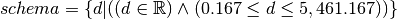
deceleration = ArgumentsConstants.deceleration
args_schema[deceleration] = Schema(And(Use(float, error='deceleration must be float'),
lambda a: MIN_ACCELERATION <= a <= MAX_ACCELERATION,
error=("deceleration out of range: "
"({0} <= accel <= {1})").format(MIN_ACCELERATION,
MAX_ACCELERATION)))
<class 'NameError'>
name 'Schema' is not defined
Angle¶
The angle is the degrees from 0 that the turntable should rotate to. The table defaults to clockwise but this code uses anti-clockwise as the default to make it consistent with previous turntables.
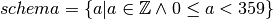
In this case the ArgumentParser is doing the conversion to integers and supplying a default of 0. I’ll leave the integer conversion in the schema and add a modulus to keep the values within range (so really, there’s no failing values because ArgParse will catch it). The schema won’t know the value of the --clockwise option so the BaseArguments will have to do the anti-clockwise conversion for itself.
angle = ArgumentsConstants.angle
args_schema[angle] = Schema(And(Use(int,
error='Angle must be an integer'),
Use(lambda a: a % DEGREES_IN_CIRCLE)))
<class 'NameError'>
name 'Schema' is not defined
The way the angles will be converted will depend on whether the user sets the --clockwise flag or not. First the schema applies the modulus to all angle values.
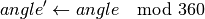
Then, if the –clockwise option isn’t set, the angle is adjusted once more by BaseArguments.
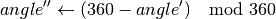
We don’t have to do anything special for negative angles because according to the python documentation ‘The modulo operator always yields a result with the same sign as its second operand (or zero)‘ so in this case the outcome of angle % 360 will always be positive since 360 is positive.
For example, if we mod the values in 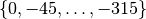 we get:
for angle in xrange(0, -360, -45):
print( " {0},{1}".format(angle, angle % 360))
Velocity¶
Rotator.setAngularVelocity |
AMPStepperController.setRevsPerSec |
The velocity is an argument for the Rotator.setAngularVelocity method which converts the velocity given to a value acceptable to the AMPStepperController.setRevsPerSec method using the equation:
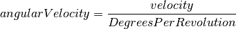
The actual calculation also rounds the outcome to seven decimal places.
In the [rotator] section of the sample configuration file given (ht.cfg) the range of angular velocities is given as:
velocity_range = [0.0042, 2.0]
Note
The velocity_range defines what the AMPStepperController.setRevsPerSec method expects not what Rotator.setAngularVelocity expects, so it is what is referred to in the Rotator as angular velocity, not the velocity set by the user.
Using a little algebra I isolated the velocity value:
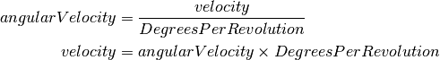
Plugging in the values from the velocity_range for the angularVelocity, and 360 for DegreesPerRevolution:
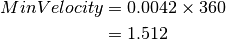
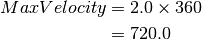
Note
The acceptable minimum and maximum velocities aren’t necessarily values that you should use. If the velocity is too low the motor might not turn the table fast enough and if it’s too high the controller might not be able to accurately find the target angle.
So our schema becomes:
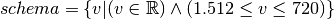
velocity = ArgumentsConstants.velocity
args_schema[velocity] = Schema(And(Use(float,
error="'velocity' must be a real number"),
lambda v: MIN_VELOCITY <= v <= MAX_VELOCITY,
error="velocity out of range ({0} <= v < {1})".format(MIN_VELOCITY,
MAX_VELOCITY )))
<class 'NameError'>
name 'Schema' is not defined
Note
Henry has asked that the default velocity be set to 50.
Configuration¶
The configuration is an optional valid ini file with settings to override the table’s default values. To avoid the expense of building the ConfigParser this only checks that the file exists, not that it’s a valid configuration file.
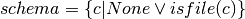
config = ArgumentsConstants.configuration
args_schema[config] = Schema(Or(None,
lambda c: os.path.isfile(c),
error="File not found"))
<class 'NameError'>
name 'Schema' is not defined
Timeout¶
Rotator.waitForPosition |
The Rotator’s rotation method call (rotateAbsolute) doesn’t block execution so the code would likely exit before the table reached its target position when called if nothing else was done (and thus kill the serial connection and stopping the table). To make sure that code waits for the table before exiting you can use the waitForPosition method, which takes an optional timeout argument (seconds to wait). It looks like sometimes when a slow speed (velocity) is used the waitForPosition method times-out so this option lets the user extend the wait-time further. The only invalid values are negative numbers (or non-numbers), although setting it to 0 might not make sense.
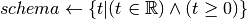
timeout = ArgumentsConstants.timeout
args_schema[timeout] = Schema(And(Use(float),
lambda t: t >= 0,
error='timeout must be a non-negative float'))
<class 'NameError'>
name 'Schema' is not defined
ArgumentError¶
The ArgumentsError is an error to raise if the argument can’t be validated. This is used so that the traceback will point to this code’s lines, not the lines of code in schema.
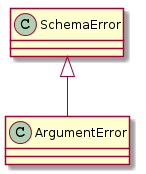
ArgumentError |
<class 'NameError'>
name 'SchemaError' is not defined